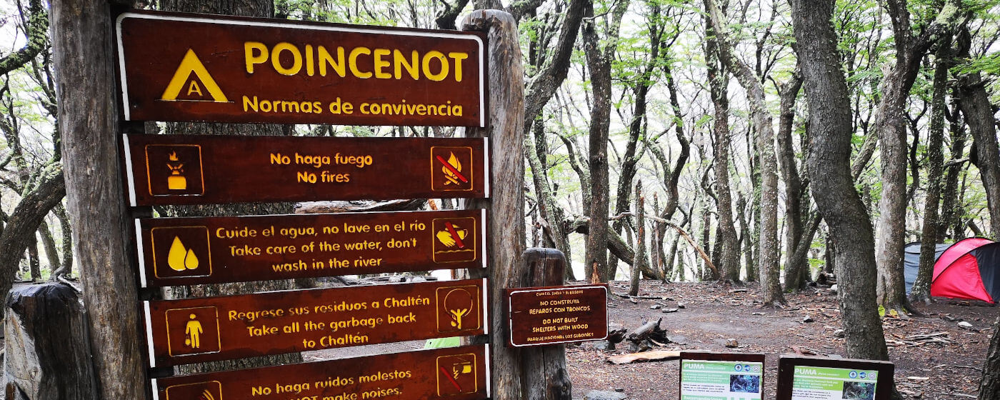

Auf ins Wanderparadies - Reiseführer El Chaltén -
Berge, Lagunen, Wälder und noch mehr Berge. Das ist das kleine, verschlafene Dörfchen El Chaltén am Fuße der Anden in Patagonien.
Gegründet wurde das Dorf 1985, um den Anspruch auf die angrenzenden Berge gegenüber Chile zu begründen. Mit der Zeit ist es immer mehr gewachsen und zum wahrscheinlich berühmtesten Ausgangspunkt zum Wandern in Argentinien geworden. Da es in El Chaltén keine andere Industrie als den Tourismus gibt, fällt der Ort jeden Winter in eine Art Winterschlaf, während im Sommer der Ort von Rucksacktouristen gefühlt überfallen wird.
Das Motto in El Chaltén ist Wandern. Somit gibt es nichts anderes zu machen als Wandern. Wer nicht wandern möchte oder lange Strecken zu Fuß scheut, kann El Chaltén direkt von der Liste seiner Patagonienreise streichen. Wem allerdings das Wanderherz inne wohnt, der hat sein Paradies gefunden. Alle Wanderungen starten direkt im Dorf und man braucht für den Nationalpark, indem das Wandergebiet liegt, keinen Eintritt zahlen.

ToDo
1. Wanderung zur Laguna „De los Tres“
Distanz: 25 km - Höhenmeter: 700 m - Dauer: 8 bis 9 Stunden - Schwierigkeitsgrad: Mittelschwer*
Diese Wanderung führt zu der bekannten Felsformation, die den Fitz Roy beinhaltet und auch von der Marke “Patagonia“ für ihr Logo verwendet wird. Die Aussicht über die Lagune „De los Tres“ auf diese Berge ist atemberaubend und die Anstrengung, um dieses Naturschauspiel zu sehen, ist lohnenswert. Die Wanderung dauert acht bis neun Stunden und man legt eine Distanz von 25 km zurück. Zusätzlich gibt es 700 Höhenmeter zu überwinden.
Die Wanderung beginnt am Ende der Avenida San Martín. Zuerst führt der Weg zu mehreren Aussichtpunkten auf den Fitz Roy und anschließend entlang des „Del Salto“-Baches. Wenn man am Poincenot Base Camp ankommt, sollte man nur noch ungefähr eine Stunde bis zur Laguna „De los Tres“ brauchen. Diese Strecke geht allerdings steil bergauf. Von der Laguna „De los Tres“ hat man den nächst gelegenen Ausblick auf die Granitwand des Fitz Roys.
♦ ♦ ♦
2. Wanderung zur Laguna Torre
Distanz: 19km - Höhenmeter: 240 m - Dauer: 7 bis 8 Stunden - Schwierigkeitsgrad: Mittel*
Die zweite klassische Wanderung, die man nicht verpassen darf in El Chaltén, ist die zur Laguna Torre mit Blick auf den Berg Torre, der als einer der schwierigsten zu besteigenden Berge der Welt gilt. Kletterer warten teilweise Wochen in El Chaltén um einen Tag mit guten Wetterbedingungen zu erwischen, um sich auf zum Gipfel zu machen. Die Wanderung zur Lagune ist 19 km lang und man überwindet 240 Höhenmeter.
Sie startet in der Nähe der großen Treppe mit dem Monument des Kletterers davor. Wenn man die Treppe hochgelaufen ist hält man sich links, bis man auf die Llao Llao Straße trifft, von der dann auch rechtsgelegen die Wanderung startet. Diese führt dann die meiste Zeit durch ein bewaldetes Tal entlang des Fitz Roy Flusses. Wenn man den „De Agostini“ Zeltplatz erreicht, sind es noch 15 Minuten bis zur Lagune.
♦ ♦ ♦
3. Kombination der Wanderung zur Laguna „De los Tres“ und der Laguna Torre
Zwischen den beiden Wanderungen zur Laguna „De los Tres“ und der Laguna Torre gibt es eine „Verbindungswanderung“, sodass man beide Wanderungen kombinieren kann. Dadurch können Doppeltstrecken vermieden werden und die Wanderung wird zu einer Art Rundweg. Für eine Tagestour wird diese dann allerdings zu lang, sodass eine Übernachtung auf einem der Zeltplätze eingeplant werden muss.
Wenn man die Wanderung in der Richtung Laguna Torre startet, bietet sich eine Nacht auf dem Zeltplatz Poicenot an. Die Abzweigung, um von der Wanderung zur Laguna Torre zum Poicenot Zeltplatz zu gelangen, befindet sich circa nach zweidrittel der Strecke. Nach dem Besuch der Laguna Torre muss man ungefähr 4 km zur Abzweigung zurücklaufen. Die Abzweigung ist ausgeschildert. Auch das Verbindungsstück bietet eine schöne Wanderung entlang zweier weiterer Lagunen.
Der Vorteil des Poicenot Zeltplatz ist, dass man früh am Morgen schon zur Laguna de los Tres wandern und dort den Sonnenaufgang bestaunen kann. Die Wanderung vom Zeltplatz zur Laguna dauert ungefähr eine Stunde.
♦ ♦ ♦
4. Wanderung zum Lomo
Distanz: 21 km - Dauer: 7 bis 8 Stunden - Höhenmeter: 1100 m - Schwierigkeitsgrad: Mittelschwer*
Im Gegensatz zu vielen anderen Wanderungen ist die Wanderung zum Lomo weniger überlaufen, jedoch auch anstrengender als viele der anderen Wanderungen in El Chaltén. Belohnt wird man mit einer unglaublichen Aussicht auf die Bergkette, die das Cerro Torre Massiv beinhaltet. Zumeist hat man auf dem Gipfel auch im Sommer Schnee. Wer also einen Schneemann bauen möchte, bei schönster Aussicht, ist genau richtig auf dieser Wanderung. Die Wanderung ist 21 Kilometer lang und man muss 1100 Höhenmeter überwinden. Man kann ungefähr mit einer Wanderung von acht bis neun Stunden rechnen. Gutes Schuhwerk ist bei dieser Wanderung Pflicht, da man Abschnitte mit viel Geröll überwindet.
Um zum Startpunkt der Wanderung zu gelangen, überquert man die Brücke des Fitz Roy Flusses und folgt dem Trail in Richtung des Besucherzentrums von El Chaltén. Von dort ist die Wanderung mit ausreichend Schildern ausgezeichnet. Zu Beginn läuft man durchs Grün und Wälder. Ab einer bestimmten Höhe erreicht man dann die Baumgrenze und es geht über Geröll weiter. Dort ist der Weg mit gelben Markierungen oder kleinen Stöcken gekennzeichnet.
♦ ♦ ♦
5. Wanderungen zu den Aussichtpunkten „Los Cóndores“ und „Las Águiles“
Distanz: 6 km - Dauer: 2 Stunden - Schwierigkeitsgrad: Leicht*
Diese Wanderung führt zu zwei Aussichtspunkten, wobei man von einem eine Aussicht über das Dorf hat und gleichzeitig Kondore bestaunen kann. Vom zweiten Aussichtspunkt hat man eine Sicht über die typische Landschaft dieser Gegend, der Steppe. Gerade der Aussichtpunkt „Mirador de los Condores“ eignet sich auch um den Sonnenuntergang zu bestaunen. Die Wanderdistanz beträgt 6 Kilometer und man sollte für die reine Wanderung ungefähr zwei Stunden einplanen.
Um zum Startpunkt der Wanderung zu gelangen, überquert man die Brücke des Fitz Roy Flusses und folgt dem Trail in Richtung des Besucherzentrums von El Chaltén. Dort beginnen die Schilder, die den Weg weisen. Man geht zuerst zum „Mirador de los Condores“. Um weiter zum zweiten Aussichtpunkt zu gelangen, muss man den Pfad für ungefähr 10 Minuten zurücklaufen, von wo die Abzweigung in Richtung „Mirador de las Aguilas“ abgeht.
♦ ♦ ♦
6. Wanderungen im „De Las Vueltas River Valley“
Zwischen El Chaltén und dem Lago „Del Desierto“ gibt noch weitere Wanderungen, die zu anderen schönen Ecken der Gegend führen. Da die Startpunkte ungefähr zwischen 13 km und 17 km von El Chaltén entfernt liegen, muss man dorthin jeweils ein Taxi nehmen. Zusätzlich muss für diese Region ein Eintrittsgeld bezahlt werden. Dafür hat diese Gegend weniger Besucher und man kann auch mal eine Stunde wandern, ohne jemand Anderen zu treffen. Eine Übersicht dieser Wanderungen findest du hier
♦ ♦ ♦

Tipps
Starte deine Wanderungen früh am Morgen, denn morgens ist das Wetter in den Bergen meistens noch besser.
Bringe ausreichend Bargeld mit nach El Chaltén, da dem Geldautomaten häufig das Bargeld ausgeht und nicht alle Restaurants und Unterkünfte Kreditkartenzahlungen akzeptieren.
Lade dir die App MapsMe auf dein Handy. In der App kann man Offlinekarten aller möglichen Gebiete aus der Welt herunterladen. Der Vorteil von dieser App ist, dass dort auch die Wanderwege in El Chaltén enthalten sind und man somit auf Grundlage von GPS immer weiß, wo man sich gerade auf dem Wanderweg befindet.
In El Chaltén gibt es nur kleine Lebensmittelläden. Wer für Wanderungen Lebensmittel einkaufen möchte, sollte wenn möglich das schon in El Calafate machen. Dort gibt es eine größere Auswahl an Produkten und die Preise sind geringer.
Die offizielle Seite von El Chaltén ist sehr informativ und sogar auf Englisch verfügbar: El Chaltén

Good to know
Anreise nach El Chaltén
Nach El Chalten gelangt man nur mit dem Bus oder einem Mietwagen. Es gibt Busverbindungen von El Calafate und Bariloche. Anbieter sind: Cal-Tur**, Chaltén Travel**, TAQSA **.
Von A nach B in El Chaltén
Da es sich um ein kleines Dorf handelt können alle Strecken zu Fuß zurückgelegt werden.
Unterkünfte in El Chaltén
Die Unterkünfte „Lo de Guille“** und „Rancho Grande“** haben gute Bewertungen. Frühes Buchen lohnt sich in El Chaltén, da die besten und schönsten Hostels schon oft mehrere Wochen zuvor ausgebucht sind. Gerade hier habe ich nur in den schlechteren Unterkünften noch ein Bett bekommen, da ich nur eine Woche zuvor versucht hatte noch ein Hostel zu bekommen.
Zelten in El Chaltén
Innerhalb des Nationalparks gibt es einige Zeltplätze, auf denen man kostenfrei übernachten kann. Auf diesen gibt es allerdings als Sanitäreinrichtungen nur ein Dixiklo und keine weitere Infrastruktur. Alle benötigten Sachen vom Zelt, über Campingkocher bis zu ausreichend Essen muss selbst mitgebracht und natürlich der Müll auch wieder mitgenommen werden. Die meisten Wanderwege sind eher für Tageswanderungen ausgelegt, sodass wirklich von Interesse nur die beiden folgenden Zeltplätze sind: „Poicenot“ und „De Agostini“.
Essen und Trinken in El Chaltén
Trinke einen Kaffee und esse ein Alfajor bei hoffentlich bestem Wetter im Primo´s**. Es handelt sich nicht um ein richtiges Café, sondern um einen umgebauten Wohnwagen, der qualitativ hochwertigen Kaffee verkauft. Davor befinden sich einige Bänke, wo man seinen Wandertag ausklingen lassen kann.
Auch in El Chaltén gibt es einige gute Brauereien und Kneipen, die hervorragendes Bier ausschenken.

Marys Meinung
El Chaltén ist für mich wirklich ein Wanderparadies. Doch wie es so oft bei Outdooraktivitäten ist, ist man doch etwas vom Wetter abhängig. Ich war zweimal dort, habe zweimal die Wanderung zur Laguna Torre gemacht und habe den Torre nie komplett gesehen, da ich immer Wolken hatte. Wer also die Bergmassive bestaunen möchte, sollte ausreichend Zeit in El Chaltén einplanen.
Solltest du mit Campingausrüstung unterwegs sein, empfehle ich auf jeden Fall die Wanderung zur Laguna Torres und Laguna „De los Tres“ miteinander zu verbinden. Ich habe diese Tour bei meinem ersten Aufenthalt in El Chaltén gemacht und bis auf Starkregenprobleme die Möglichkeit, Strecken nicht doppelt laufen zu müssen, sehr genossen.
Insgesamt würde ich jedem, der gerne wandert, empfehlen zusätzlich die Wanderung zum Lomo zu machen. Für Eilige ist zumindest ein Aufenthalt von drei vollen Tagen zu empfehlen.
Hinweis: El Chaltén ist mittlerweile gerade bei Rucksacktouristen sehr beliebt und demnach teilweise überlaufen, sodass eine Einsamkeit beim Wandern nicht aufkommt.

Disclaimer
*Die Schwierigkeitsgrade der einzelnen Wanderungen sind Einschätzungen. Ich habe die meisten Wanderungen auf dieser Seite gemacht und denke, dass diese Einteilungen passend sind, jedoch bin ich ein Hobbywanderer, sodass ich KEINE fachmännische Meinung abgeben kann. Die gegebenen Wetterbedingungen sollten bei der Entscheidung zu einer Wanderung immer berücksichtigt werden. Allgemein sind alle Aktivitäten dieser Seite Erfahrungen, Anregungen und Tipps. Die Verantwortung bei der Ausführung und Haftung obliegt bei dir. Alles auf dieser Seite ist nach meinem besten Wissen und Gewissen zusammengetragen, jedoch keine Garantie für Richtigkeit.
**Das genannte Unternehmen ist eine Empfehlung meinerseits. Ich habe KEINE Gegenleistung von diesem erhalten.